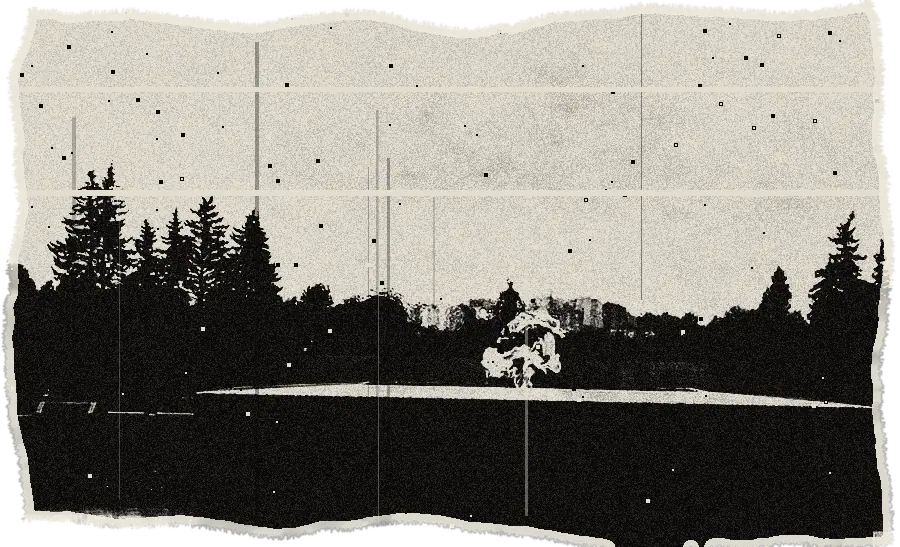

ТОМ I · ЛИСТ I · 09 / 12
МАССОВАЯ СМЕРТЬ
Чума, война и арифметика мёртвых у государства
Массовая смерть даёт сразу две вещи: дыру в записи и официальное число. Атлас интересует зазор между ними.
1771 год — наши дни · Москва, Ленинград / Санкт-Петербург, Волгоград · Государственная память; православные и светские обряды

I / 01
1771: яма
Московская чума 1771 года убила десятки тысяч человек. Мёртвых хоронили за городом, и новое кладбище в Ваганькове принимало первым делом безымянных. Историческое повествование о кладбище начинается с числа, которое оно не может разложить.
Массовая смерть даёт запись именно такого рода: яма, итог, название места и никаких имён. Атлас не иллюстрирует яму. Он печатает сам факт.

| Место | Число | Основание | Примечание |
|---|---|---|---|
| Пискарёвское | около 470 000 | музейная и справочная литература | жертвы блокады и воины |
| Пискарёвское | около 520 000 | альтернативные цифры в той же литературе | расхождение здесь не разрешено |
| Ваганьково, 1771 | «тысячи» | историческое повествование о кладбище | надёжного итога в использованных источниках нет |
| Блокада Ленинграда, 1941–44 | военные и гражданские погибшие считаются отдельно | историография | итоги меняются в зависимости от определения |
| Мамаев курган, Волгоград | Мемориальный ансамбль на месте Сталинградских боёв | Фотография, 2021 (на этом листе) | документирован как место; здесь не обследован |
I / 02
Неизвестный солдат
Могила Неизвестного Солдата у Кремлёвской стены была открыта 8 мая 1967 года. Памятник создали архитекторы Дмитрий Бурдин, Владимир Климов и Юрий Рабаев вместе со скульптором Николаем Томским; останки были перенесены из братской могилы под Москвой. Вечный огонь зажгли при открытии, и с тех пор его поддерживают.
Неизвестный солдат — очень конкретное решение проблемы масштаба: он превращает неуправляемое число в единственное тело, которое можно посетить. Что выигрывается в обрядовой сосредоточенности, то теряется в сведениях. На этом обмене построена государственная память.
I / 03
Непогребённые
Александр Эткинд в книге Warped Mourning («Кривое горе») доказывает, что советская культура была сформирована смертями, которых не похоронили как следует, — казнённых, исчезнувших, мёртвых в неотмеченной земле, — и что литература и работа памяти в России снова и снова возвращались к ним как к «неупокоенным». Этот довод — культурная история, а не обследование могил, и атлас подаёт его как интерпретацию.
Кэтрин Мерридейл в Night of Stone («Ночь камней») делает близкое замечание со стороны живых: двадцатый век в России дал столько смерти, что само горевание стало умением, которое приходилось регулировать, подавлять или совершать в частной жизни. Обе книги использованы здесь ради своих доводов, а не как перечни фактов.


Аппарат источники · связанные листы · термины
Источники этого листа
- vagankovo Mos.ru (официальный портал города Москвы) — Материалы по истории Ваганьковского кладбища (б. д.)
- merridale2000 Merridale, Catherine — Night of Stone: Death and Memory in Russia (2000)
- tumarkin1994 Tumarkin, Nina — The Living and the Dead: The Rise and Fall of the Cult of World War II in Russia (1994)
- etkind2013 Etkind, Alexander — Warped Mourning: Stories of the Undead in the Land of the Unburied (2013)
- mos-ru-unknown Mos.ru / Главное архивное управление города Москвы — Материалы по истории Могилы Неизвестного Солдата (б. д.)
- pmemorial Пискарёвское мемориальное кладбище (сайт музея) — Вечный огонь (б. д.)
- rusmuseum Русский музей (виртуальный филиал) — Виртуальная выставка: Великая Отечественная война (б. д.)
Ссылки, даты обращения и ограничения — в списке источников.